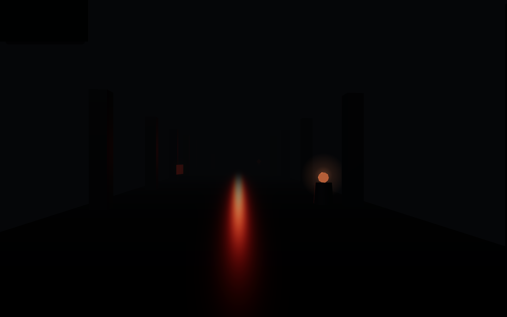

Interactive kiosks & touch software
Bilingual touchscreen experiences designed for standing visitors, gallery light and ten thousand taps a week.
Full capability →
Museum technology, engineered in India
Interactive museums, intelligent installations and AI experiences. Six capabilities, one walk through the gallery below.
Bilingual touchscreen experiences designed for standing visitors, gallery light and ten thousand taps a week.
Full capability →Synchronised film walls, soundscapes and ambient screens that hold a room and recover on their own.
Full capability →Deep-dive browsing for hundreds of objects, films and oral histories, structured so a curator updates content without touching code.
Full capability →Guided journeys, adaptive interpretation and multilingual delivery powered by on-device intelligence.
Full capability →Artefacts scanned, remastered and re-materialised: print-ready heritage replicas for handling collections, retail and outreach.
Full capability →Panel installation, kiosk lockdown and honest testing: planted-failure verification, not green-light theatre.
Full capability →On View
Client — Ministry of Textiles, D.C. Handlooms
Venue — Vishwakarma Gallery, Handloom Haat, Janpath, New Delhi
Opened — 14 August 2026
6 kiosk apps · 2 languages · 301 catalogued objects · 0 internet needed
Six offline-first kiosk apps run bilingual among the catalogued textiles, and visitors walk through a run of illuminated arch installations to reach them. The photographs below are from the gallery floor itself, install week through opening night.


Case Study
Six kiosk apps, built in parallel to a hard deadline, one per app, to be ready for the gallery floor on 14 August 2026.
301 catalogued objects in the archival station: a deep dive a visitor can work through, object by object.
Six apps, one instruction: “make the apps homogeneous in all aspects and aesthetically smooth both UI and UX wise.” A house-style pass unified them before the floor opened.
A passing test only means something when failure is possible. Our suites plant deliberate faults and prove the checks catch them before every release.
Contact
Write to us with the gallery, the timeline and what the visitor should walk away remembering.